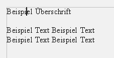
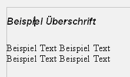
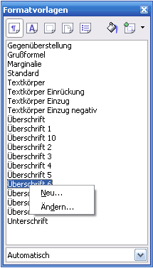
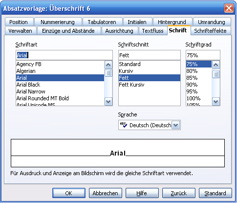
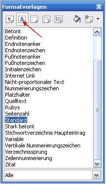
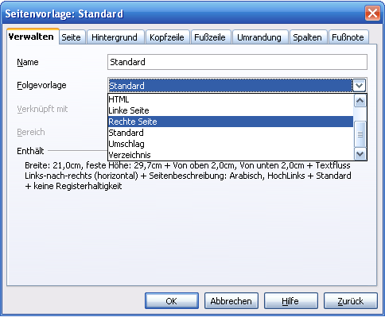

| [zurück] | [Hauptmenü] | [weiter] |
OpenOffice.org Textdokument
-
Formatvorlagen
Grundlagen
| 1) |
Noch haben wir nichts formatiert - nur 3 Zeilen Text
geschrieben. Hier ist der Cursor momentan an der
Stelle, wo wir eine Überschrift haben
möchten!
|

|
| 2) |
Jetzt benützen wir die
Formatvorlagen
um OpenOffice.org zu erklären, dass das eine
Überschrift sein soll! Doppelklick auf
"Überschrift" und schon ist diesem Absatz eine
andere Vorlage zugewiesen!
|
 |
| 3) |
Hier das Ergebnis:
|

|
Gut, genau jetzt kommt die Stärke der Formatvorlagen. Weil jetzt das Programm weiß, welcher Absatz was darstellen soll, können Sie OpenOffice.org zentral erklären, wie dieses Textelement aussehen soll. Das wird dann an allen Textelementen dieser Art gleichzeitig übernommen, was natürlich ein einheitlicheres Aussehen garantiert sowie eine große Arbeitsersparnis ist.
Absatzvorlage ändern
Jetzt erkläre ich, wie man diese gewählte Überschrift vergrößert und fett macht:Hier sind 2 Überschriften, die nach der oben beschriebenen Art als solche definiert wurden.
| 1) |
Cursor in die erste Überschrift bringen - dann
wird in den Formatvorlagen sofort eingeblendet, welche
Formatvorlage hier gilt.
|
|
| 2) |

|
|
| 3) |
Gewünschte Änderungen eingeben; OK
|

|
| 4) |
Fertig!
Beide Überschriften sind modifiziert.
|
|
Möchten Sie sich darüber hinaus eigene Vorlagen erstellen, so müssen Sie nur den Absatz formatieren und auf das Icon "Neue Vorlage aus Selektion" klicken! Auf diese Art können Sie die Textabschnitte viel schneller und einfacher formatieren. Und wenn am Ende doch der Platz ausgeht oder die Schrift nicht passt, so genügt es die Vorlage anzupassen - man braucht nicht jeden Abschnitt umzuformatieren, das erledigt das Textverarbeitungsprogramm von OpenOffice.org für Sie.
Weitere Beispiele
1. Zeichenvorlage
|

|
|
Abb. 1: Zeichenvorlagen in den Formatvorlagen
|
- Markieren Sie das stark zu betonende Wort oder Phrase (bzw. wenn Sie die STRG-Taste festhalten, sind auch Mehrfachauswahlen möglich)
- klicken Sie doppelt auf "Stark betont"
2. Seitenvorlage
|
Abb. 2: Seitenvorlage in den Formatvorlagen
|
- Setzen Sie den Cursor in die betreffende Seite
- Klicken Sie in den Formatvorlagen doppelt auf die gewünschte Vorlage
Hier in diesem Optionen-Dialog möchte ich auch die Einstellung für Verwalten>Folgeformate besonders hervorheben. Das legt fest, welche Seitenvorlage für die nächste Seite verwendet werden soll.

Denkbare Anwendung wäre, einem Dokument
eine Titelseite zu verpassen, die keine Kopf- und
Fußzeilen hat mit größeren
Seitenrändern, danach soll eine "Linke Seite"
abwechselnd mit einer "Rechten Seite" folgen. Linke und
Rechte Seite werden deshalb unterschieden, weil z.B. die
Kopf- und
Fußzeilen die Seitenzahl über ein Feld enthalten
sollen, aber das nur in den Ecken (d.h. einmal links- und
einmal rechtsbündig).
- Definieren Sie hierfür die erste Seite als "Erste Seite"
- Stellen Sie in der Formatvorlage für "Erste Seite" "Linke Seite" als Folgeformat ein
- in "Linke Seite" dann "Rechte Seite" als Folgeformat
- genauso in "Rechter Seite" "Linke Seite" als Folgeformat
| [zurück] | [Hauptmenü] | [weiter] |
© Copyright 2003, Harald Schilly
This documentation is part of "Erste Schritte: OpenOffice.org Textdokument", which is released
under the terms of the PDL.
For full copyright and license info read the index page.
Contributors are: Wieland Peter